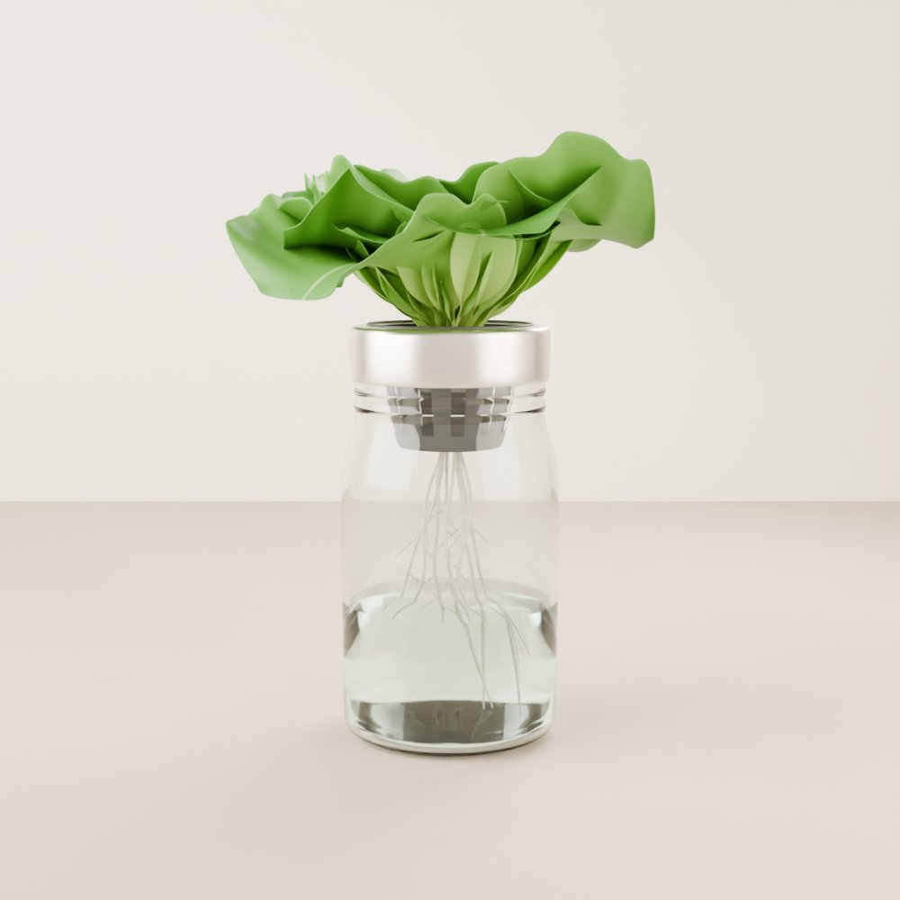
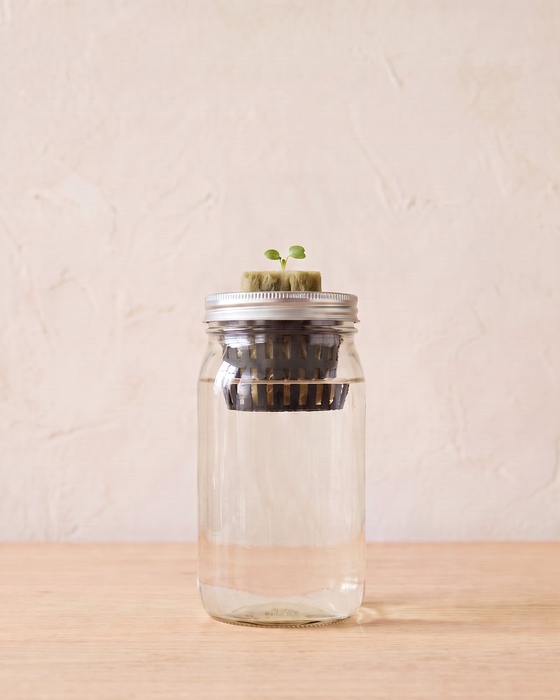

Beginner guide · Water jars
Grow lettuce in a jar.
Your first indoor harvest, with no pumps, no power, and no experience needed. Most of what you need costs a few dollars, and some of it is already in your kitchen.

01 The idea
How it works
This is called the Kratky method, named after Dr. Bernard Kratky, the scientist who came up with it. It's a type of hydroponics, which just means growing plants in water with plant food mixed in, instead of in soil.
The plant sits in a small cup in the jar's lid, with its roots hanging down into the water. As the plant drinks, the water level slowly drops. That leaves a gap of air at the top of the jar, and the roots in that gap take in the air they need. So you set it up once, and the plant mostly looks after itself.
Drag the slider to see what a jar looks like from seed to harvest.
Watch it grow

Times are rough and change with light and temperature.
02 Shopping list
What you need
Tick things off as you gather them. For each item there's a cheap do-it-yourself option and a ready-made one.
-
A 1 litre (1 quart) wide-mouth glass jar, like a mason jar. DIY: any clean jar or a large yogurt tub.
-
Light in the water grows algae (green slime). DIY: wrap the jar in paper, tin foil, or an old sock, or paint the outside. Leave a thin strip so you can peek at the water level.
-
A small plastic pot full of holes that sits in the jar's opening. A 5 to 7.5 cm (2 to 3 inch) cup fits most wide-mouth jars. DIY: poke lots of holes in a plastic cup and cut a hole in the lid to hold it.
-
Something for the seed to sit in, like a rockwool or coco coir cube (sold at garden and hydroponic shops). Clay pebbles can fill the cup around it to hold it steady.
-
Loose-leaf or butterhead types are easiest, such as Black Seeded Simpson, Buttercrunch, or a salad mix. Once you've got the hang of it, jars also work well for bok choy, kale, basil, mint, parsley, and green onions.
-
Called "hydroponic nutrients". Regular garden fertiliser isn't the same, because hydroponic food contains everything the plant would normally get from soil. Look for one made for leafy greens and follow the label's amounts.
-
A bright, sunny window can work in spring and summer. In winter, a small LED grow light makes a big difference.
-
pH measures how acidic or alkaline the water is (our pH guide explains it). Test drops are cheapest; a digital pen is easier to read.
03 Method
Step by step
-
Sprout your seed
Soak the growing cube in plain water, squeeze out a little, and press 2 or 3 seeds onto the top. Keep it damp and somewhere warm and bright. Sprouts usually appear in 3 to 7 days. When they do, snip off all but the strongest one. New to seeds? Our seed-starting guide walks you through it.
Shortcut: you can also skip this step and put the cube straight into the jar (steps 2 to 4). The water touching the bottom of the cup keeps it damp while the seed sprouts. That's the version shown in the slider above.
-
Mix the plant food
Fill the jar with water and add hydroponic nutrients, using the amount on the label for leafy greens or lettuce. Stir well. New to this? Our plant food guide explains how to mix it. Room-temperature tap water is usually fine.
-
Check the pH (if you have a kit)
Lettuce grows best with a pH between 5.5 and 6.5. If it's higher, add a few drops of "pH down" (sold beside the nutrients), stir, and test again. Our pH guide explains it all.
-
Set up the jar
Put the cube with your seedling into the net cup and set the cup into the lid. Adjust the water so it just touches the bottom 1 cm (½ inch) of the cup. Cover the jar to block light.
-
Give it light
Lettuce likes about 12 to 16 hours of light a day and cool rooms, around 15 to 21°C (60 to 70°F). Too hot, and it can turn bitter or try to flower early.
-
Let the water drop
Don't keep topping it up to the top. The air gap is what lets the roots breathe. If the jar gets low (about a quarter full) before harvest, add a little more nutrient water, but only enough to fill it about halfway.
-
Harvest!
You can usually start picking outer leaves about 5 to 6 weeks after planting the seed. Pick a few at a time and the centre keeps growing. A full head takes a week or two longer.
Times are rough and change with your light, temperature, and lettuce type.
04 Troubleshooting
If something looks wrong
- Tall, floppy seedlings
- They're stretching for light. Move them closer to the window or grow light.
- Green slime in the water
- That's algae from light getting in. Cover the jar better.
- Brown, slimy, smelly roots
- The roots aren't getting enough air, often because the water is too warm or was filled too high. Keep the jar cooler and leave that air gap.
- Bitter leaves, or a tall stalk in the middle
- The lettuce is "bolting" (trying to flower) because it's too warm. Harvest what you can and try a cooler spot next time.
- Pale or yellow leaves
- The plant may be hungry. Check you used the full label amount of nutrients, and check the pH if you can.
Share your first jar
Join the Root Collective to swap tips, ask questions, and show off your harvest.
Join us, it's free